Godstorm source art
Captured references; hosted originals retrieved now. Unreviewed artwork. Images load locally, without network access.
The Tower of Endless Night: The Marrow Vaults
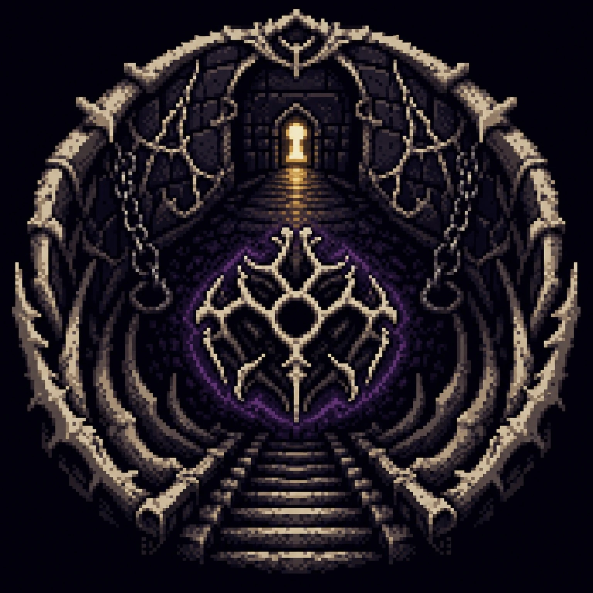
1536 × 1536; 191356 bytes; SHA-256 fa3b9abaf7069e19b757aa89dc843debd019373831fb4c32b23b071be683be72
The Tower of Endless Night: The Stormcourt
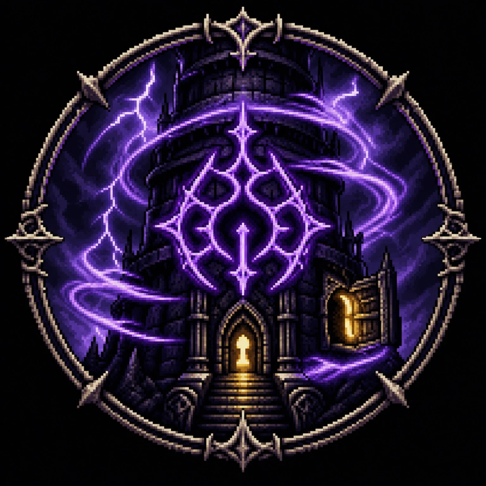
1536 × 1536; 173128 bytes; SHA-256 8cc058177cb900544d229ff2f6eaee841ff850ddf85fab17fc87b680d1164e01
Warden of the Half Eclipse
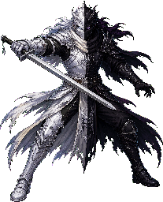
207 × 256; 81069 bytes; SHA-256 5bd6d083fe8a0114480abeaf03fb5c6519c38ad4165788bad4c453731a7717f8
Nightveil Sentinel Ascendant
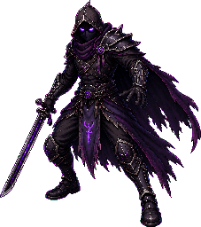
227 × 256; 71381 bytes; SHA-256 5d69dab2bd4f943a79aee0a9634bfde7bedcdd573c31f528d208925adf232107
Widow of the Waning Moon
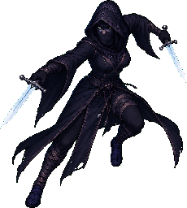
230 × 256; 56732 bytes; SHA-256 a891746acc0e4db00a59aa504b90419b303b7d5c62e38b5f6d7fb0196d7f95ae
Starless Monk Ascendant
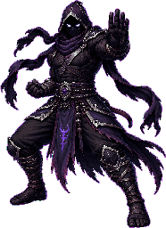
186 × 256; 73985 bytes; SHA-256 33de67c58f07c98c77bdcca1ebea7e17ca494885463afd6bc4b61deba10d9ef1
Chained Chorister
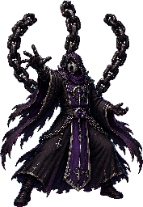
177 × 256; 72820 bytes; SHA-256 05d2317e411be50a159c9371181d6cf54e12ac5926d5ceed080e675fa450c8bd
Herald of the Last Dusk
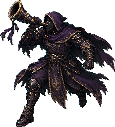
232 × 256; 81501 bytes; SHA-256 4533bbc496ffd7e0880423bf45b114219577405e2edeae368a9df9f90e08d75b
The Gloaming Judge
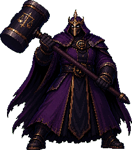
225 × 256; 83701 bytes; SHA-256 bc2b8ccdb0a86a316ec371e48d9ff518afb6b189db4a25d10a415be7b539516b
Hollow Lantern Ascendant
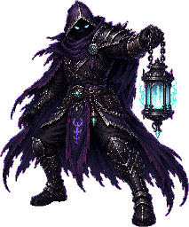
213 × 256; 92029 bytes; SHA-256 74b14e775a7904efdeecc639a8570692bdaf4a5a4f7ddfd96a1bab81dbc2521c
Sovereign Echo of the Godstorm
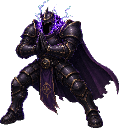
239 × 256; 80492 bytes; SHA-256 d73cb67dcc5b1b8442b8198736a8af0e177c97099ab3a24e4dfc986389282a04
The Moth Tyrant
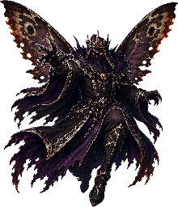
220 × 256; 96239 bytes; SHA-256 edd633f65a0f368ac11cef87733fb38f349d6da7a87c78a3e072744bf4e837ce
Umbral Reaver Ascendant
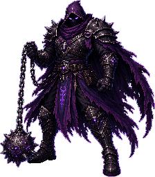
224 × 256; 94636 bytes; SHA-256 b8bd99eba111ccd3849702c7b24b373e966bbc221f8ae9add6e0f5167bd4da40
The Candlewright
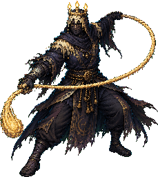
229 × 256; 80868 bytes; SHA-256 957ff5aa1ed14bfcf267ff435bf7ae509ebd31750c8053eaf51bfd24dc689d25
Keeper of Hushed Hours
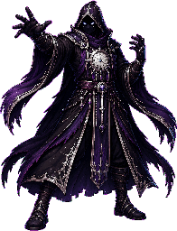
196 × 256; 83468 bytes; SHA-256 c5e672d74a9e9d0cf1670bbf9bee6d89109c5b82ae1294fc77f91c4a90211fc1
marrow vault 1
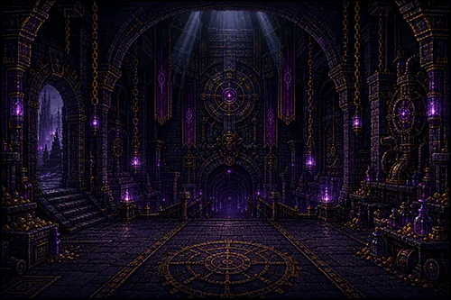
500 × 333; 42398 bytes; SHA-256 05a78a022770710bc991d37df9e3ba061d24bf77e20504037400c082dfb78575
marrow vault 2
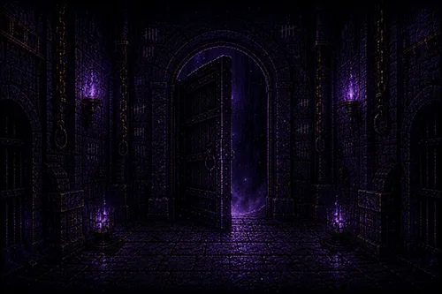
500 × 333; 23630 bytes; SHA-256 ec3b81e64366a329c71d1fb3499c1d1547fc7dddd5b7db6b9ddccda8dacc8092
marrow vault 3
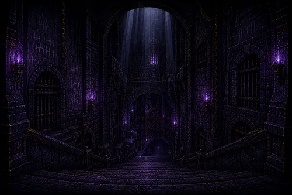
500 × 333; 25400 bytes; SHA-256 5e4fa364b2539a54eff45fe1c911b5f8ca2921c98789b7f6a5585859771081a2
StormCourtyard
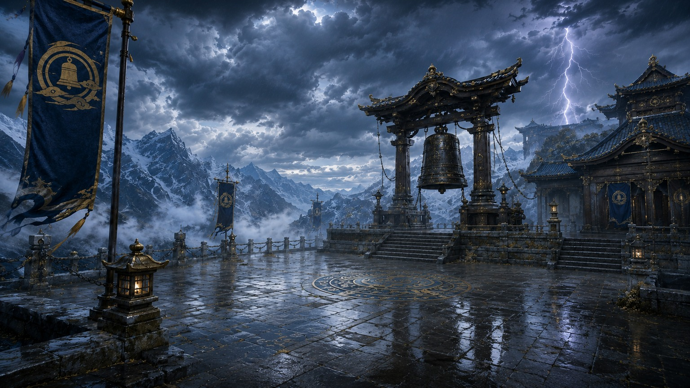
1536 × 864; 404485 bytes; SHA-256 12085dfaf1258be6ad7296554e975ea425ec968e5937cb26f6973473aad6f377
Umbral Reaver: default
Hollow Lantern: default
Nightveil Sentinel: default
Warden of the First Dark: default
Starless Monk: default